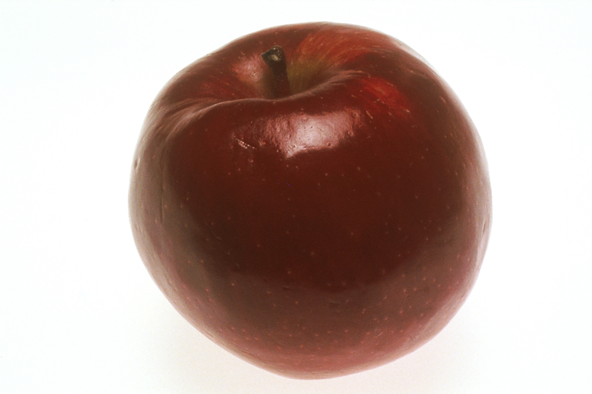
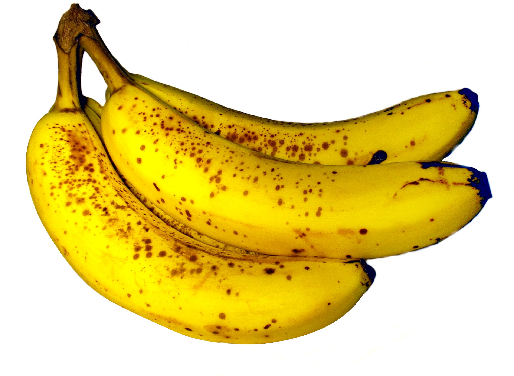
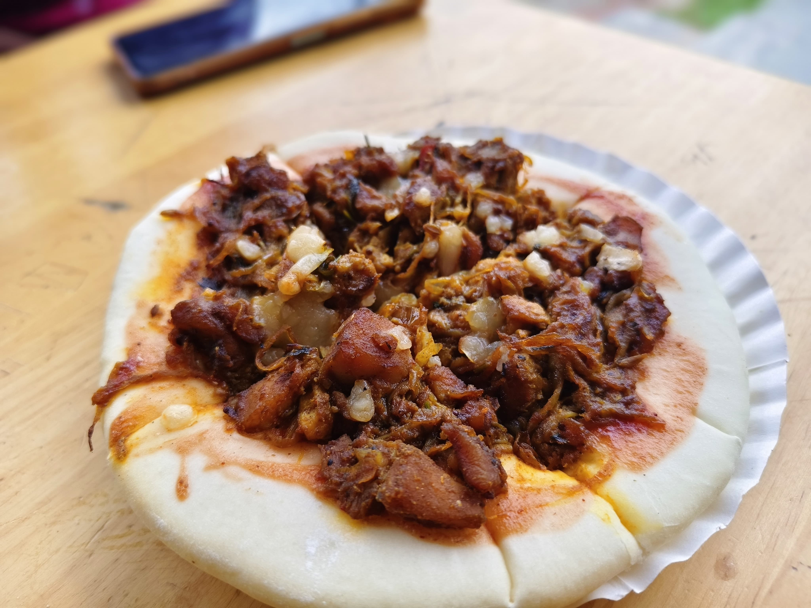
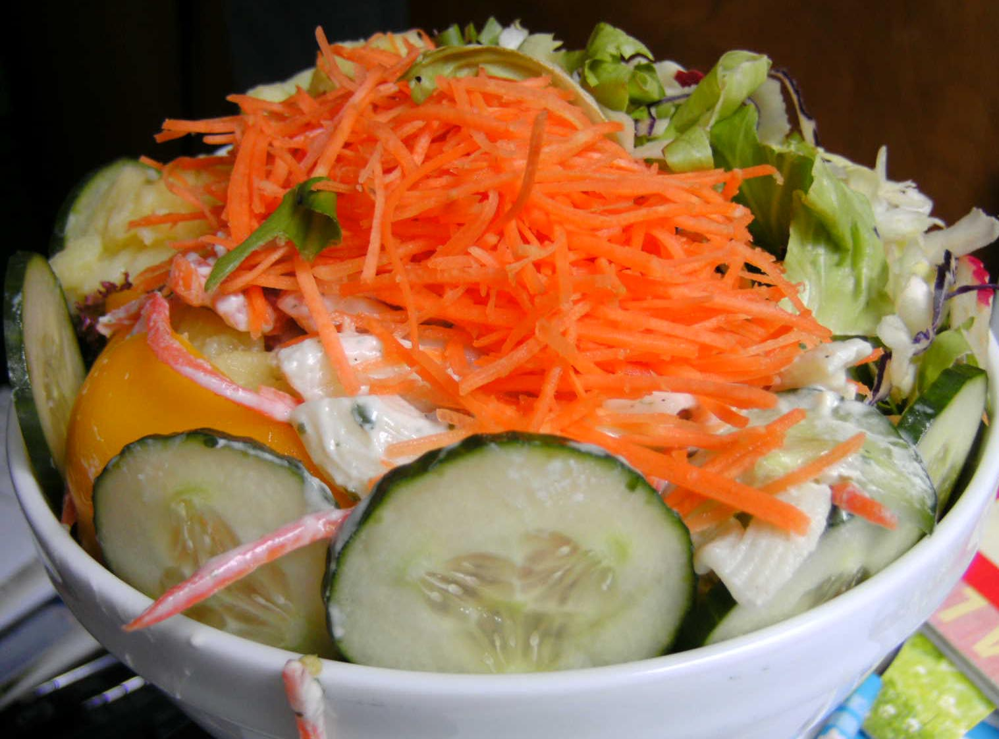
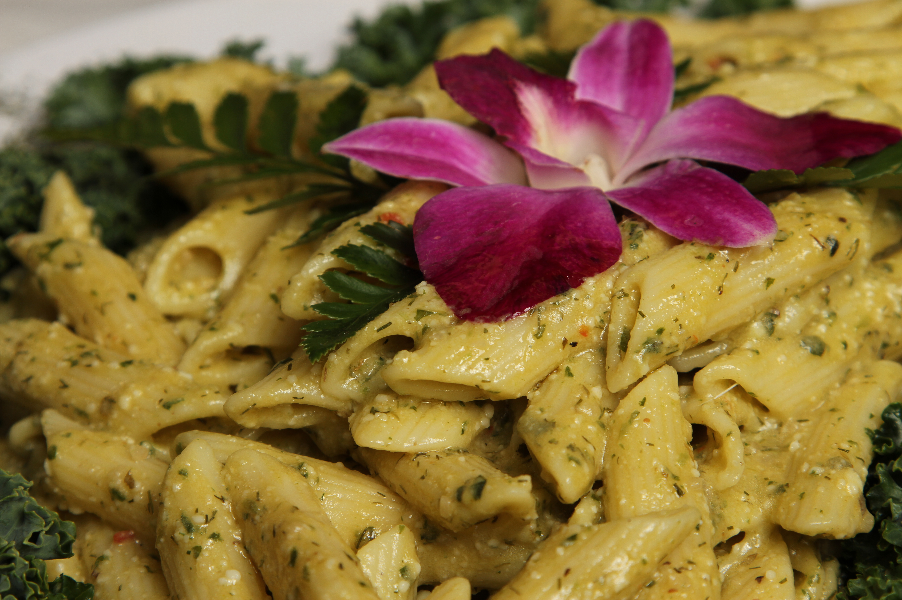
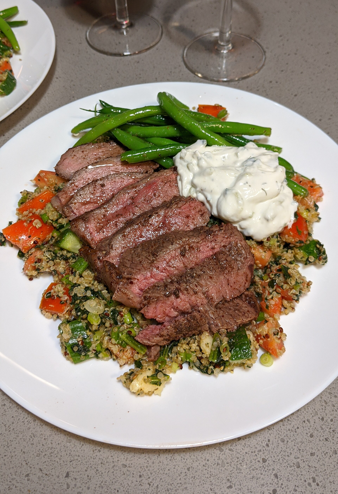
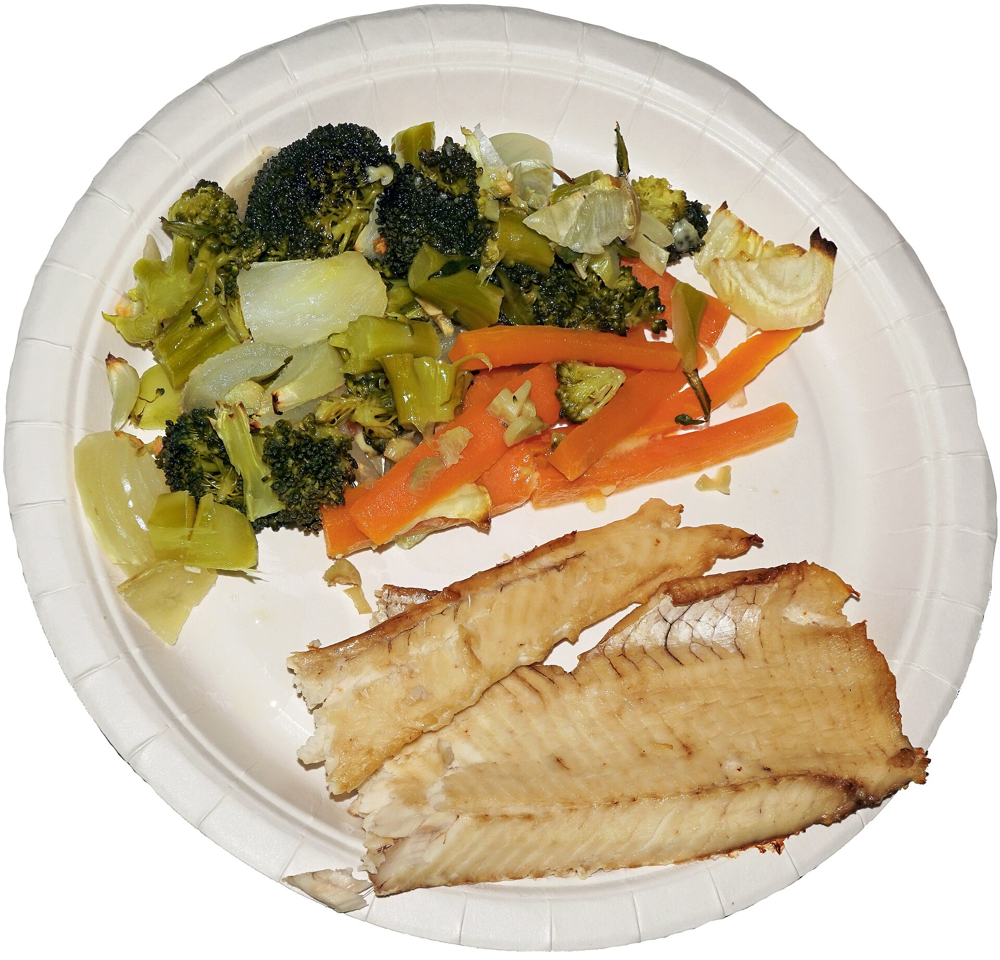
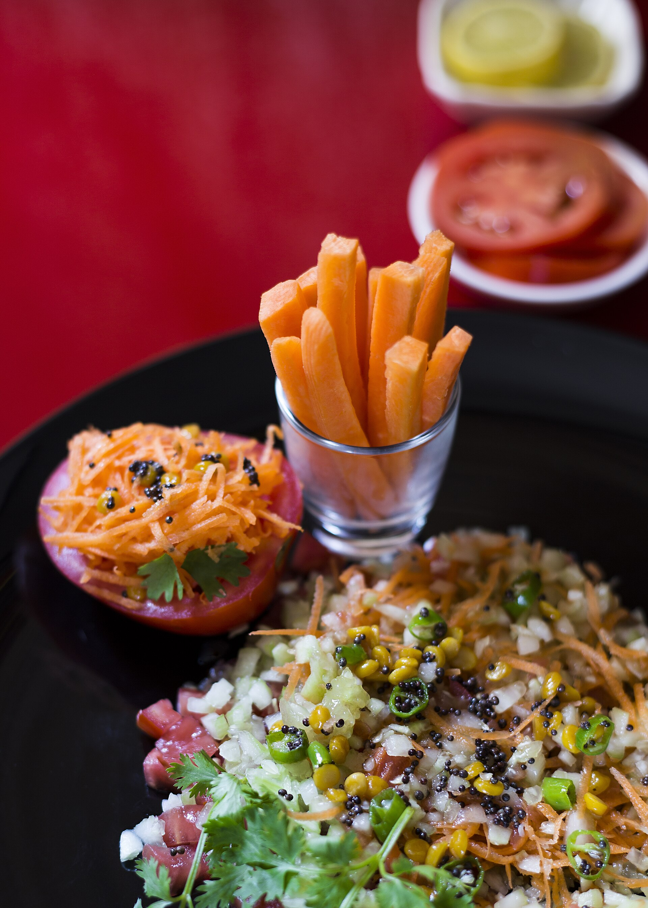
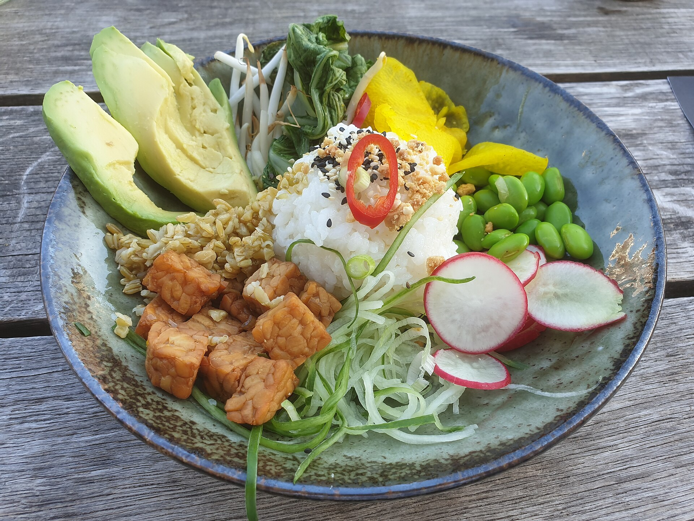
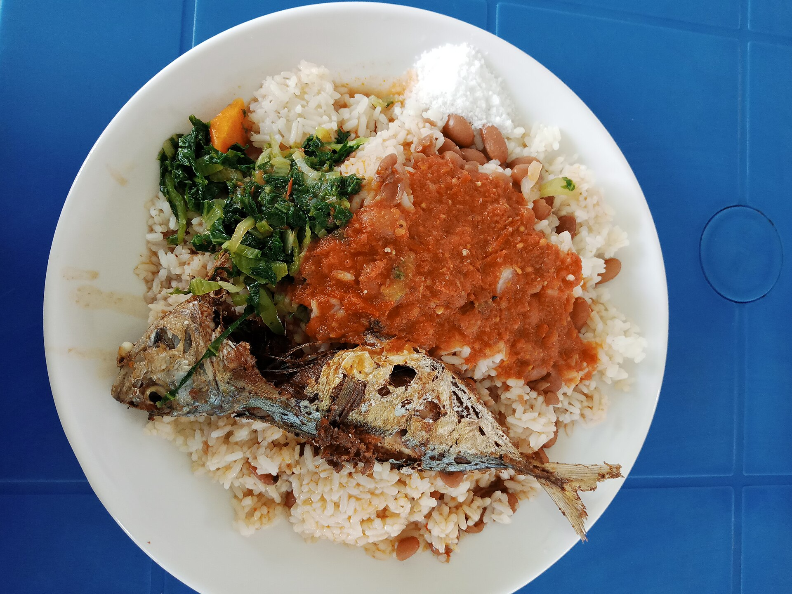

Opening the app, tapping the visible capture/import controls, selecting one local photo, handling OS permission prompts, turning airplane mode on or off manually, backgrounding and restoring the app, cancelling, retrying, and writing down the observed state.
Manual test walkthrough · Epic 3
Prove the photo path by hand.
A focused Android + iOS guide for exercising the photo-analysis surface with ten real food pictures, including five multi-component dishes, observing local-first states, and recording recovery without automation or API calls.

01 · Orient
One promise for the tester.
Follow the visible product path with your fingers. Record exactly what the device shows. Keep product behavior, evidence gaps, and future gates separate.
No test runner, scripted gesture, shell command, network/API request, instrumentation step, mock server, automated assertion, or inferred “pass” based only on a build or a unit test.
The shared contract, Android/iOS adapter seams, and local-first routing logic exist. Concrete production runtime/model activation and signed G-3 benchmark evidence are still open. This deck never claims those gates are closed.
Use Pass only when the physical device visibly completes the intended manual behavior. Use Blocked when the app/build/runtime/device prerequisite is missing. Use Fail when the observed behavior contradicts the expected path.
01Ready to captureStart here.
02Preparing photoPhoto is being normalized.
03Photo readyPrepared input is visible.
04Analyzing photoKeep the attempt in view.
05Review candidateRecord what appears.
02 · Test kit
Ten pictures. Five controls plus five composite meals.
Copy these downloaded files to each device’s photo library using your normal manual transfer method. Test one picture per attempt; do not assume that visual similarity means an inference result is correct. The first five are simple controls; the second five are intentionally crowded dishes.
01 · Apple
Single isolated object. A clean control for capture, preparation, and one-item review.
Photo: Renee Comet / National Cancer Institute · public domain · source page
.jpg){kind=link}

02 · Banana
Single object with a different shape and orientation. Watch for the same state path.
Photo: ZooFari · public domain · source page


03 · Pizza
Composite dish. Useful for candidate review and recording uncertainty without guessing.
Photo: MuthuLakshmi Vijaya · CC0 · source page


04 · Salad
Many small components. Check whether the UI stays legible and whether recovery stays explicit.
Photo: Sarang · public domain · source page


05 · Penne pasta
Dense texture and garnish. Use it to exercise a busy photo while keeping notes factual.
Photo: Daniel Sone / National Cancer Institute · public domain · source page

Fixture discipline: The ten images are food-photo inputs, not expected-result oracles. Record the exact candidate, abstention, typed recovery, or block that the current build exposes. Do not write calories, macros, allergens, or confidence values unless the product visibly provides a reviewed, non-medical value.
03 · Composite meals
Test what happens when the plate is already busy.
These five additions put several visible objects in one frame. The goal is not to decide whether the model is nutritionally right; it is to see whether the product stays legible, honest, and recoverable when components overlap or are already chopped.

06 · Steak + sides
Sliced steak sits over a grain-and-vegetable base with green beans and a creamy side. Watch whether separate plate regions remain understandable when the protein overlaps the base.
Photo: Ɱ · CC BY-SA 4.0 · source page


07 · Fish + vegetables
Fish fillets share the frame with broccoli, carrot, and onion. Check for small side pieces near the plate edge and for readable recovery when the background is bright.
Photo: Tiia Monto · CC BY-SA 4.0 · source page


08 · Chopped salad
Many diced vegetables, grated carrot, herbs, and dressing create a dense texture. Record whether the UI abstains, groups the dish, or shows a candidate without inventing item-level detail.
Photo: Talupu · CC BY-SA 4.0 · source page
.jpg){kind=link}

09 · Buddha bowl
Several ingredients are separated into visible sections inside one bowl. Check crop behavior, component boundaries, and whether a busy composition keeps the action and terminal state clear.
Photo: PizzaMan · CC BY-SA 4.0 · source page


10 · Fish, rice + beans
A whole fish overlaps rice, beans, greens, and sauce. Use it to observe occlusion and mixed textures; do not infer bones, portions, or nutrition from the image.
Photo: BlessNathan · CC BY-SA 4.0 · source page

Manual loop · every composite meal
- Choose one composite fixture.Start from “Ready to capture” and select only that local image. Do not combine photos or crop during the attempt.
- Let the whole photo remain visible.Watch whether preparation preserves all visible components and whether a busy frame causes a clear typed recovery.
- Describe what is actually shown.Record candidate text, abstention, unavailable copy, or block exactly as displayed. Note whether the result is dish-level, component-level, or silent.
- Repeat after “Scan again”.Return to capture before selecting the next composite meal. Keep each row tied to one image and one attempt.
Observe
Look for legibility, visible component handling, crop/rotation surprises, and explicit uncertainty. A plausible label is still only an observation; it is not an expected result.
Complex-dish notes to capture
- Component count, not correctness.Write a short visual note such as “fish + greens + rice visible”; do not turn that note into a nutrition claim.
- Overlap and occlusion.Record if one object covers another, if sauce merges boundaries, or if the app explicitly asks for a clearer image.
- Small/chopped objects.Record whether the result groups them, names them, abstains, or displays a recovery branch. Do not count pieces manually as a pass condition.
- Cross-platform comparison.Run the same five composite images on Android and iOS, then compare state vocabulary and recovery—not picker pixels or model certainty.
Observe
Keep platform-specific permission and picker behavior separate from the shared photo-analysis outcome. If a composite fixture is blocked by a missing gate, record the gate name.
04 · Perform on Android
Keep the whole attempt in one pair of hands.
Use a physical Android device for device-level claims. A simulator or a missing local runtime can still support a UI walkthrough, but the result must be marked as limited or blocked rather than upgraded to inference evidence.
Happy path · one fixture at a time
- Start at “Ready to capture”.Launch SuperNutrition and confirm the capture screen is visible.
- Tap “Choose photo”.Use the Android photo picker and select exactly one fixture from the test kit.
- Watch the labels.Record whether the screen moves through “Preparing photo”, “Photo ready”, and “Analyzing photo”.
- Read the terminal state.If “Review candidate” appears, copy the visible candidate into the log. If a typed recovery appears, copy that exact text instead.
- Tap “Scan again”.Confirm a new attempt returns to the capture surface before moving to the next fixture, including the five composite meals.
Observe
One photo should own one visible attempt. A replacement or late result must not reopen an old attempt. This is a manual observation, not an automated assertion.
Permission, cancel, restore
- Test camera permission.Tap “Take meal photo”, deny the camera prompt, and record “Camera permission is required”.
- Recover in Settings.Tap “Open settings”, manually enable camera permission, return to the app, and try “Take meal photo” again.
- Cancel the picker.Tap “Choose photo”, close the picker without selecting anything, and record the recovery copy shown by the build.
- Background an active attempt.While “Preparing photo” or “Analyzing photo” is visible, go to the home screen, wait briefly, and reopen SuperNutrition.
- Verify restoration.Record whether “Restoring photo analysis” appears and whether the same attempt resumes safely without a duplicate terminal result.
Observe
Permission, cancellation, and lifecycle recovery should remain explicit. If the build does not expose the path, mark it Blocked and name the missing prerequisite.
Android offline check · manual only
Use the device’s Quick Settings to turn Airplane mode on. Relaunch or reset the visible capture flow, select one fixture, and record the exact result. Turn Airplane mode off only after the observation is written down.
05 · Perform on iOS
Repeat the same evidence vocabulary.
The iOS host keeps camera and photo-picker ownership native while the shared surface exposes the same capture states. Test on a physical iPhone for physical-device claims; simulator observations are UI-only.
Happy path · one fixture
- Start at “Ready to capture”.Open SuperNutrition and confirm the shared capture surface is ready.
- Tap “Choose photo”.Use the iOS photo picker and select one downloaded fixture.
- Watch the state copy.Record “Preparing photo”, “Photo ready”, and “Analyzing photo” if they appear.
- Record the terminal outcome.Copy the visible candidate or typed recovery message. Do not add a nutrition interpretation that is not shown.
- Tap “Scan again”.Return to capture and repeat the same manual path for all ten fixtures, including the five composite meals.
Observe
The cross-platform contract is about evidence vocabulary and ownership, not identical pixels. Record platform-specific picker/permission UI separately from the shared photo-analysis state.
Permission, cancel, restore
- Test camera permission.Tap “Take meal photo”, deny the iOS camera prompt, and record “Camera permission is required”.
- Recover in Settings.Tap “Open settings”, manually enable Camera, return to SuperNutrition, and retry.
- Cancel the picker.Open “Choose photo” and dismiss the picker without selecting. Record the exact recovery copy shown.
- Background an active attempt.Swipe up to leave the app while the photo is preparing or analyzing, then return to it from the app switcher.
- Verify restoration.Record whether “Restoring photo analysis” appears and whether stale/duplicate results are avoided.
Observe
If a required Apple signing, host, or runtime prerequisite is absent, stop at that boundary and mark the row Blocked. Do not relabel simulator or compile evidence as physical iOS inference evidence.
iOS offline check · manual only
Open Control Center, turn Airplane mode on, return to SuperNutrition, and run one fixture through the visible path. Record whether the build exposes local/unavailable/offline evidence. This guide does not authorize remote consent.
06 · Recover
When the path bends, keep the result honest.
Epic 3 is fail-closed around local capability, attempt ownership, cancellation, and explicit remote escalation. The tester’s job is to capture the branch that actually appears.
Visible local result
Record the local route/provenance if the product exposes it. A candidate is not permission to invent numeric nutrition or medical conclusions.
Typed local recovery
Record offline, unavailable, abstention, poor image, no-food, cancelled, or permission copy exactly as shown. Mark the manual row Pass only when the recovery is usable.
Missing gate
If the current build has no runnable local runtime/model, no approved device evidence, or no physical iOS signing, mark Blocked with the gate name. Do not treat that as a product failure.
Recovery cases to run once per platform
Permission denied: deny camera access, follow “Open settings”, return, and retry.
Picker cancelled: open the native picker, dismiss it, and record whether the app remains at capture or shows typed cancellation.
Backgrounded: leave during preparation or analysis, return, and check for “Restoring photo analysis” without duplicate completion.
Airplane mode: turn it on manually before selecting a fixture. Record local evidence or a typed offline/unavailable branch; do not infer network isolation from the absence of a visible error.
No-food branch: the ten downloaded fixtures are all food photos. Use a separate non-food image only if that branch is explicitly required, and label it as a different fixture.
07 · Record
Leave a trace another tester can read.
This small sheet is intentionally manual. Fill it while the device is in front of you; one row means one photo on one platform.
Session header
Ten-photo result grid
FixturePassFailBlocked
Apple
Banana
Pizza
Salad
Penne
Steak + sides
Fish + vegetables
Chopped salad
Buddha bowl
Fish, rice + beans
08 · Accept
Definition of done for this hand test.
Close the session with a bounded statement. The outcome is useful when it says what was observed, on which device, with which fixture, and which Epic 3 gate remains open.
All ten fixtures have a recorded outcome on the target platform, including the five composite meals, the visible path is understandable, permission/cancel/background recovery is explicit, and no photo is silently routed to a remote path.
The physical device, signed host, approved runtime/model, or G-3 evidence needed for the specific claim is unavailable. Include the missing prerequisite and keep UI-only evidence separate.
The app contradicts its own visible contract: a denied permission cannot recover, a stale attempt publishes after replacement, a cancelled run completes unexpectedly, or a remote path is silently entered.
Platform, device/OS, app build label, fixture name, exact visible status/recovery copy, Pass/Fail/Blocked, and a short note about the next action. Never attach raw personal photos or secrets.
Next action: run the walkthrough on the first available physical Android and iPhone devices, then attach only the manual observation sheet to the Epic 3 review. Keep the G-3 runtime/model decision and production inference evidence as a separate gate.